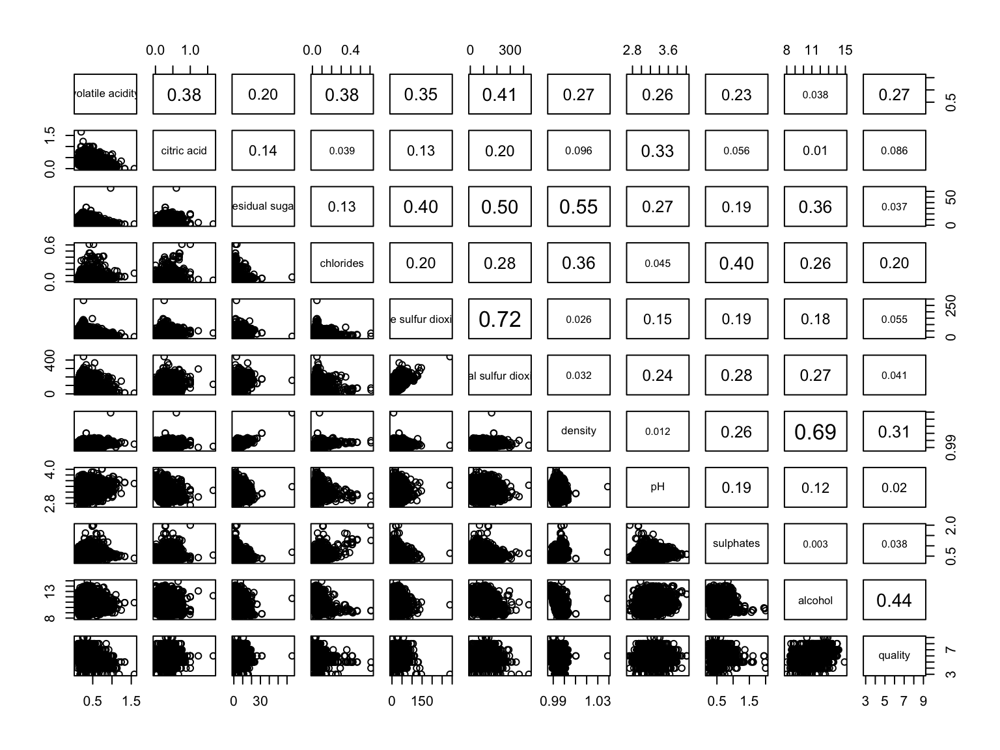
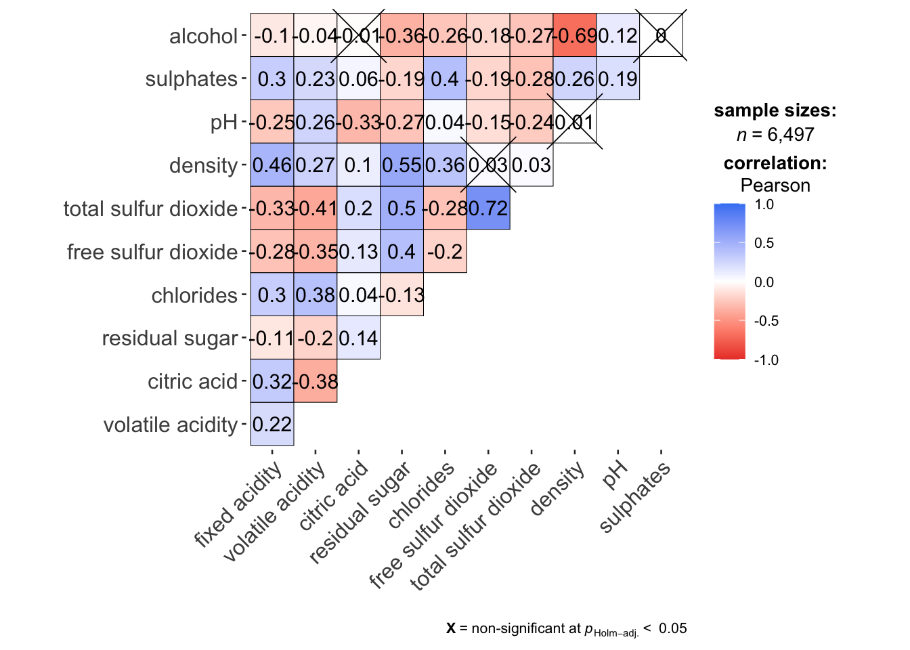
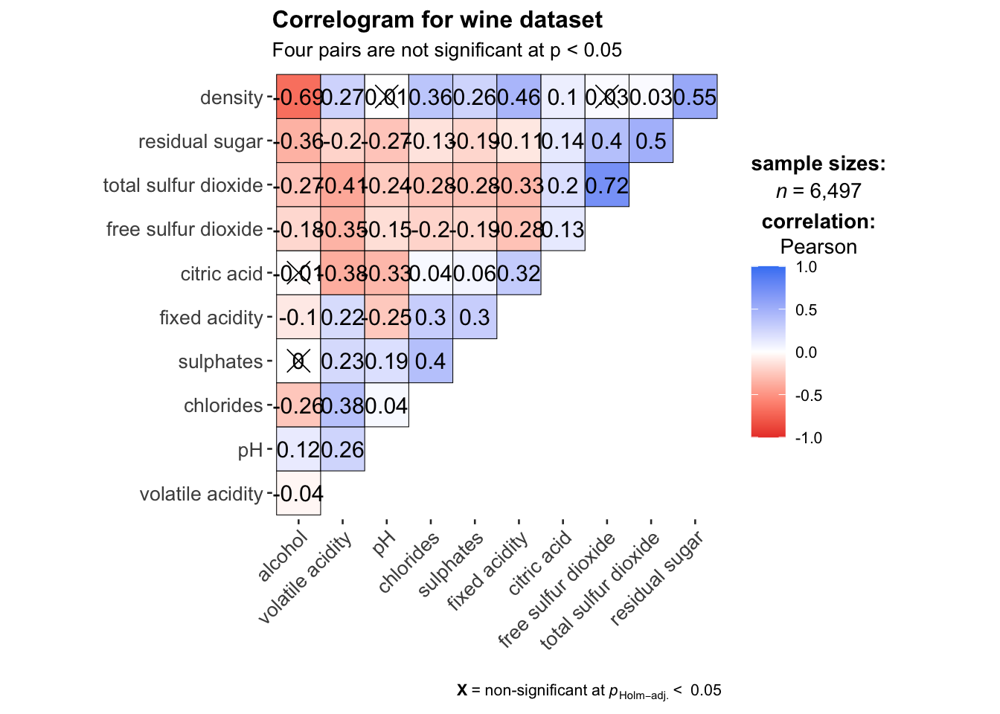
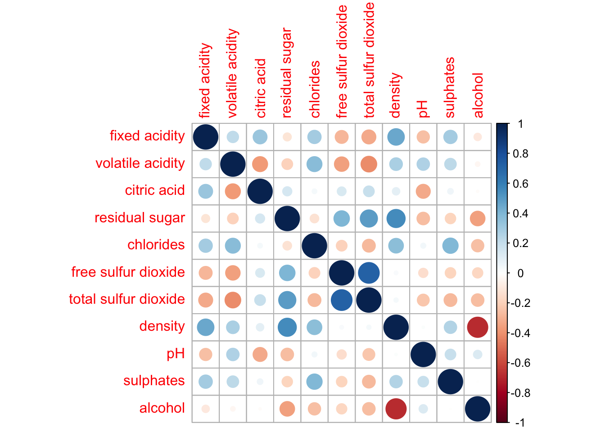
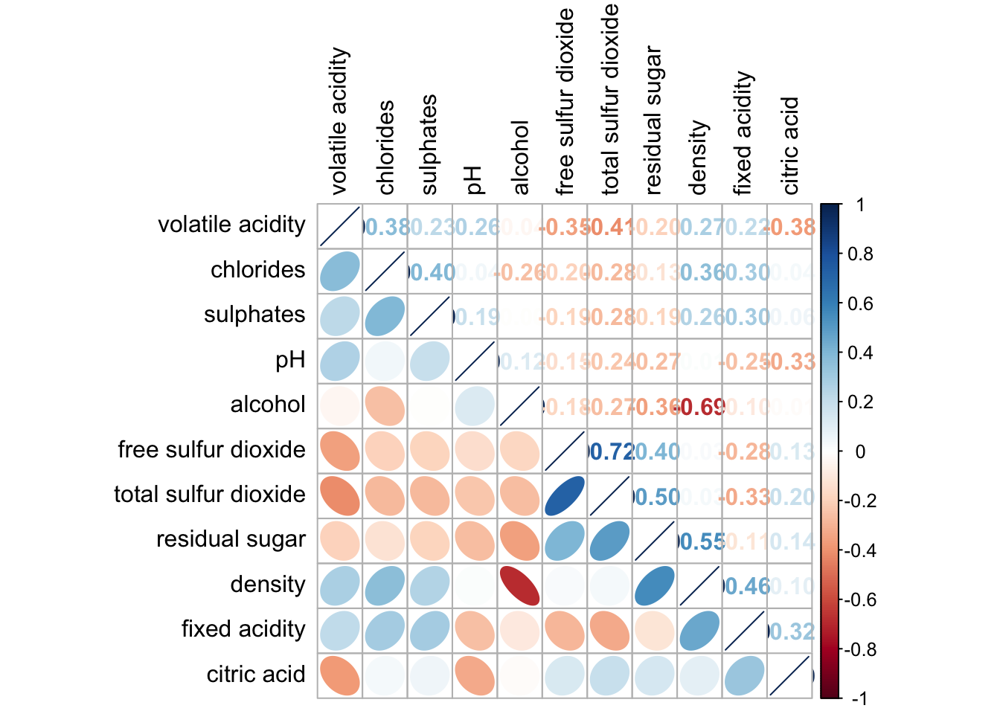

pacman::p_load(corrplot, ggstatsplot, tidyverse)5b. Visual Correlation Analysis
Overview
A correlation matrix shows the pairwise correlation coefficients between all variables in a dataset. In this exercise I used the Wine Quality dataset to explore relationships between chemical properties of wine.
Reflections
There are several ways to visualise a correlation matrix in R, each suited for different purposes. pairs() gives a quick scatter plot overview, ggcorrmat() is useful because it layers in statistical significance automatically, and corrplot() is the most visually polished and flexible. Reordering by hierarchical clustering was a useful technique, it groups related variables together, making underlying patterns much easier to read. The significance test overlay also helped distinguish meaningful correlations from noise.
Getting Started
Loading packages
Importing data
wine <- read_csv("wine_quality.csv")Building Correlation Matrix — pairs() method
Basic correlation matrix

pairs(wine[,1:11])Lower corner only

pairs(wine[,2:12], upper.panel = NULL)Upper corner only

pairs(wine[,2:12], lower.panel = NULL)With correlation coefficients

panel.cor <- function(x, y, digits=2, prefix="", cex.cor, ...) {
usr <- par("usr")
on.exit(par(usr))
par(usr = c(0, 1, 0, 1))
r <- abs(cor(x, y, use="complete.obs"))
txt <- format(c(r, 0.123456789), digits=digits)[1]
txt <- paste(prefix, txt, sep="")
if(missing(cex.cor)) cex.cor <- 0.8/strwidth(txt)
text(0.5, 0.5, txt, cex = cex.cor * (1 + r) / 2)
}
pairs(wine[,2:12], upper.panel = panel.cor)Visualising Correlation Matrix — ggcorrmat()
Basic ggcorrmat

ggstatsplot::ggcorrmat(
data = wine,
cor.vars = 1:11
)ggcorrmat with title

ggstatsplot::ggcorrmat(
data = wine,
cor.vars = 1:11,
ggcorrplot.args = list(outline.color = "black",
hc.order = TRUE,
tl.cex = 10),
title = "Correlogram for wine dataset",
subtitle = "Four pairs are not significant at p < 0.05"
)Visualising Correlation Matrix — corrplot Package
Basic corrplot

wine.cor <- cor(wine[, 1:11])
corrplot(wine.cor)Using ellipse method

corrplot(wine.cor, method = "ellipse")Mixed layout

corrplot.mixed(wine.cor,
lower = "ellipse",
upper = "number",
tl.pos = "lt",
diag = "l",
tl.col = "black")With significance test

wine.sig = cor.mtest(wine.cor, conf.level = .95)
corrplot(wine.cor,
method = "number",
type = "lower",
diag = FALSE,
tl.col = "black",
tl.srt = 45,
p.mat = wine.sig$p,
sig.level = .05)Reordered by hclust

corrplot.mixed(wine.cor,
lower = "ellipse",
upper = "number",
tl.pos = "lt",
diag = "l",
order = "hclust",
hclust.method = "ward.D",
tl.col = "black")